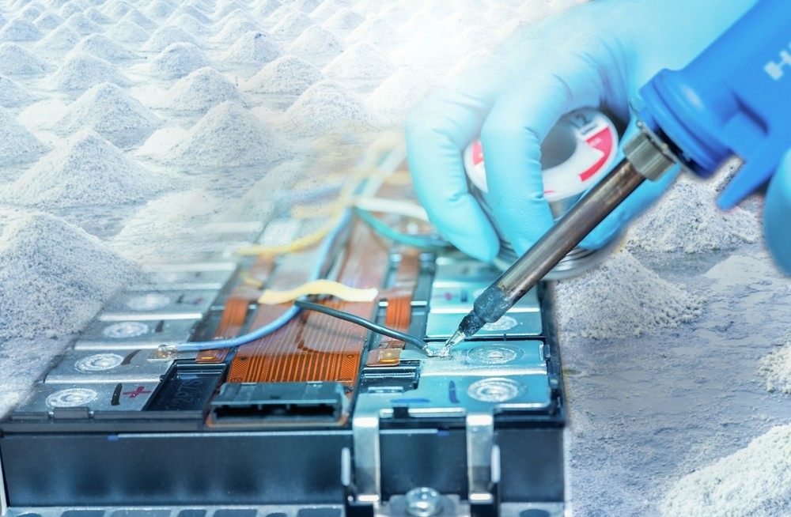
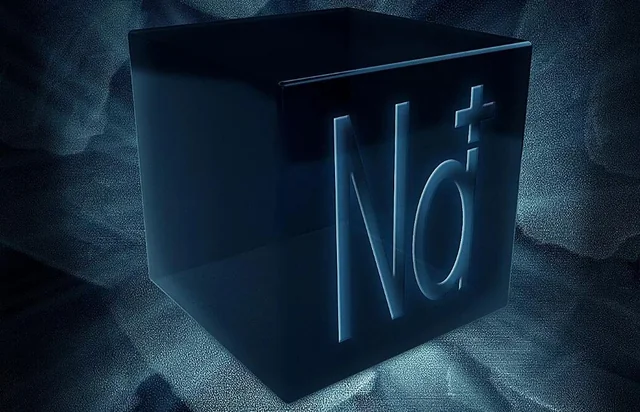

Sodium batteries are making waves in the energy storage world due to their unique properties. Unlike their lithium-ion counterparts, sodium boasts a significant cost advantage – it's abundant and readily available. But that's not all! These batteries hold their own even in harsh environments, making them ideal for applications where temperature fluctuations are a concern.
Let's delve deeper into the world of sodium batteries and explore their potential:
Understanding Sodium Batteries:
At its core, a sodium battery is an energy storage device that functions by shuttling sodium ions between electrodes. This process converts electrical energy to chemical energy and vice versa. Compared to lithium-ion batteries, sodium offers a clear economic advantage. Plus, it boasts impressive qualities like high energy density, extended cycle life, and exceptional safety.
Conquering the Temperature Spectrum:
One of the most exciting aspects of sodium batteries is their wide-temperature performance. Here's how they fare in both hot and cold conditions:
- Low-Temperature Performance: Cold weather can cripple batteries by slowing down chemical reactions and hindering ion movement. However, sodium batteries defy the odds, maintaining a high capacity retention rate even at a frigid -40°C. This resilience stems from their specially designed electrode materials and electrolytes. Researchers are constantly innovating, creating electrode structures with enhanced contact areas and choosing electrolytes that excel in low temperatures. These advancements ensure efficient ion migration and preserve performance even in the harshest winters.
- High-Temperature Performance: On the flip side, extreme heat can accelerate chemical reactions within batteries, leading to potential safety hazards and performance decline. But sodium batteries remain stable even at scorching temperatures of 80°C. This stability is attributed to their high-temperature-resistant electrolytes and electrode materials. Additionally, well-designed thermal management systems play a crucial role in preventing thermal runaway. Through clever heat dissipation techniques, sodium batteries can maintain their performance even in sweltering conditions.

Quantifying Performance: Capacity Retention Rate:
The capacity retention rate is a vital indicator of how well a battery holds its original capacity under varying temperatures. Sodium batteries shine in this aspect too, exhibiting remarkable stability across a wide range of -40°C to 80°C.
- Low-Temperature Capacity Retention: Even at -40°C, sodium batteries can retain over 70% of their capacity. This is a testament to their optimized design and the use of low-temperature-friendly electrolytes. These features allow sodium batteries to deliver high energy output and efficient charge-discharge cycles even in extreme cold.
- High-Temperature Capacity Retention: Similarly, under scorching temperatures of 80°C, sodium batteries retain over 80% of their capacity. This impressive feat is a result of their inherent high-temperature stability and the effectiveness of their thermal management systems. By keeping the internal temperature low despite the external heat, these systems ensure continued performance stability.
Unlocking Applications: A World of Potential:
The wide temperature tolerance of sodium batteries opens doors to a plethora of applications, particularly in challenging environments:
- Polar Exploration and Military Operations: Equipment used in these extreme environments must function reliably in frigid conditions. Sodium batteries, with their exceptional low-temperature performance and cost-effectiveness, become a compelling choice for powering such equipment.
- Electric Vehicles and Energy Storage Systems: Both electric vehicles and energy storage systems require batteries with unwavering performance across temperatures. Sodium batteries, with their wide temperature range and economic advantage, are potential game-changers in these fields.
- Harnessing Renewable Energy: Renewable energy sources like wind and solar are heavily influenced by weather conditions. This necessitates robust energy storage systems that can deliver stable power output when the wind isn't blowing or the sun isn't shining. Sodium batteries, with their wide operating temperature, affordability, and inherent safety, are ideally suited for integrating with renewable energy systems.

The Future is Bright:
Sodium batteries demonstrate exceptional performance stability and capacity retention across a wide temperature spectrum. This unique characteristic positions them as a highly promising technology for various applications in extreme environments. As research progresses and costs continue to decline, sodium batteries are poised to play a transformative role in the future of electric vehicles, energy storage systems, and renewable energy integration.